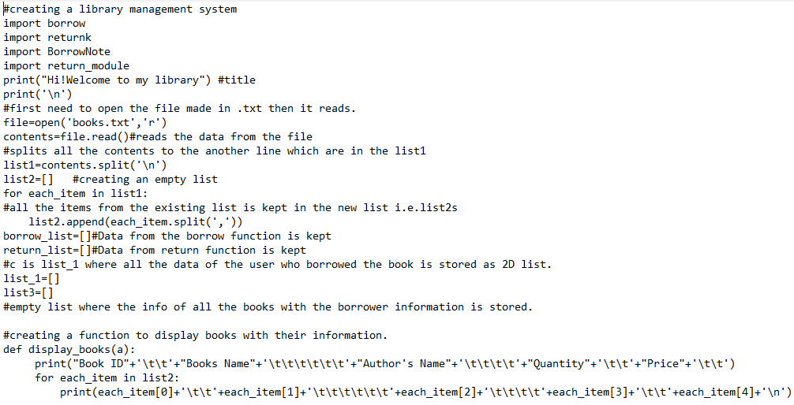
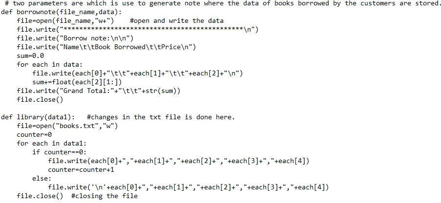
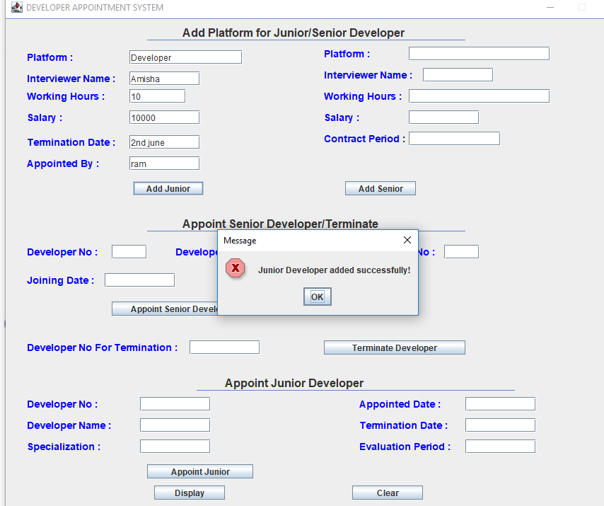
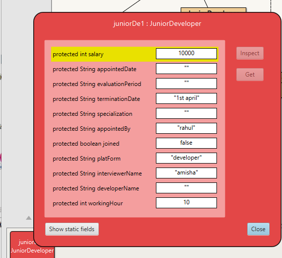

Hello! My name is Amisha Bhatta. I'm the maker of this website.I'm 19 years old. I live in lokanthali,Bhaktapur. I'm currently studying at islington college as a networking student located at kamalpokhari,kathmandu. It has been almost a year I joined my college. I started learning programming from class 10. It is the most exciting and knowledgable topic i've ever studied.
After joining my college, i have gained alot of practical knowlegde which is so benefical and can be implemented in our real life as well. I have developed many projects by using programming language. I have developed a small library Management System using python. When someone borrows any book from the library the number of books automatically decreases and if the person comes to return then the number automatically increates. This system was created for the use of small library.
|  |  |
I also learned how to use java programming language to create development systems. Recently, there was the project to make a Graphical Management System(GUI). This GUI was about the company to hire or terminate the new employee or the working employee in the company.
|  |  |
In the process of creating various projects, i also created one database which is used for consultancy. This database is used in consultancy where the data can be stored. The database that was created was for small consultancy byt similarly for bigger companies database can be created. Here, we can easily find how many employess are working, how many emloyees are of which age with their phone number and many more information can be received. Here,some pictures are below of my work.